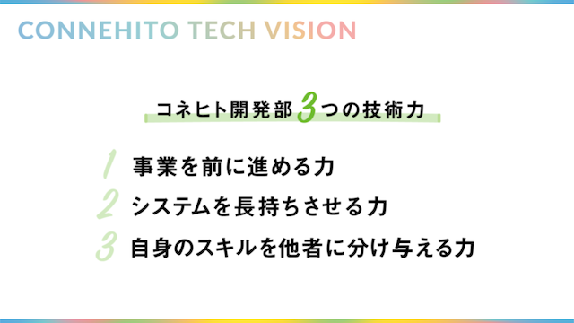

エンジニア評価制度
コネヒトではエンジニアを真っ当に評価するためにエンジニア向けの評価制度を策定・運用しています。
なぜ、エンジニア評価制度をつくったのか？
まず、重要なことはエンジニア評価制度はエンジニアを特別扱いするための制度ではないということです。そもそも、アフターテックカンパニーを目指すコネヒトにとっては本来、Dev/Biz関係なく共通の評価制度のみ存在することが理想だと考えています。その上で、エンジニア評価制度を作ったのは現時点でみんなで力を合わせて同じゴールを達成するために異なるものさしやプロセスが必要だと考えたからです。例えば、技術力が3ヶ月で2倍伸びたとしても、会社の業績が2倍になるとは限りません。しかし、中長期的には技術力を伸ばしていかないと開発スピードや質が向上せず、結果的に業績が伸び悩むことになります。そこで、わたしたちは「技術力」があるエンジニアを真っ当に評価するために、そして、事業を永続的に成長させるためにこの評価制度をつくるに至りました。
3つの技術力
「技術力」があるエンジニアを真っ当に評価するためには、そもそも、技術力という曖昧模糊とした言葉を定義する必要があります。コネヒトでは以下の3つの力をテックビジョン達成のための重要な技術力と定義し、評価項目にも盛り込んでいます 
事業を前に進める力
誰かの「やりたいこと」や「あったらいいな」を具現化させることがコネヒトのエンジニアの価値だと考え、事業へ貢献することを大切にしています。具体的には、抽象的な要件や課題を具体的な仕様に落とし込むことや、スピード感を持ってリリースまで持っていくことを「事業を前に進める力」と定義しています。
システムを長持ちさせる力
コネヒトでは、「リリースはゴールではなく、スタート」と捉え、ユーザーへ永続的な価値を届け続けるために息の長いシステムをつくることを大切にしています。具体的には、負債が少なく拡張性のある設計を行うことや、不具合が少なくメンテナンス性の高いコードを書くことを「システムを長持ちさせる力」として定義しています。
自身のスキルを他者に分け与える力
個人の成長だけではなく、チームの成長を意識することで組織としての成果を最大化させるためにコネヒトではアウトプットを大切にしています。具体的には、分かりやすい形でナレッジを社内外に届けることや、再現性のある方法で標準化を行うことを「自身のスキルを他者に分け与える力」と定義しています。

制度の特徴
制度の特徴を一部抜粋して紹介します。
多様なキャリアパスの支援
テックビジョンの達成には変化に適応出来る多彩なスキルやバックグラウンドを持ったチームを築くことが重要だと考えています。また、ソフトウェアの適用範囲が広がる中で、エンジニアのキャリアパスもますます多様になっています。そこでコネヒトの評価制度では単一のキャリアパス（例えば、昇給するには管理職になる必要があるといったような制度）を用意するのではなく、個々人のキャリアを尊重しながら、エンジニアリングマネージャーのようなロールや、エキスパートやスペシャリストのようなロールを適宜選択することが出来ます。
技術目標
基本的に一つの組織やプロダクトへの在籍期間が長くなるほど、ドメイン知識やドメスティックなスキルに依存しないピュアな技術力を伸ばし続ける難易度は上がっていくと考えています。しかし、事業を非線形に成長させるにはピュアな技術力も当然必要不可欠です。また、純粋に技術的な好奇心を刺激させることも大切だと考えています。そこで、コネヒトでは期毎に設定する目標の一つに技術目標というものを取り入れています。技術目標は「いずれ組織に還元されるであろう個のスキルアップや技術的な取り組みとプレゼンス向上に効くアウトプットを評価する」という定義に従っていれば、各エンジニアが自由に目標を設定することが出来ます。
Lead Engineer
コネヒトではプロダクト毎にLead Engineerというロールを設けています。コネヒトのエンジニアリングマネージャーには一定プレイヤーとしての仕事を求めていることもあり、マネージャーの負担を軽減する必要がありました。そこで、Lead Engineerを擁立することでその負担を軽減しています。また、CTOが全ての意思決定に介入することは健全ではないため、Lead Engineerにその権限を一部委譲することで開発のスピードアップを図っています。具体的にLead Engineerが行っていることは開発組織が掲げる技術系戦略の推進や、新しい技術の導入や設計のサポートなど技術面からの開発推進などです。また、プロダクトを中心に据えた組織にするため、Lead Engineerは技術領域単位ではなくプロダクト単位で擁立していることも特徴の一つです。